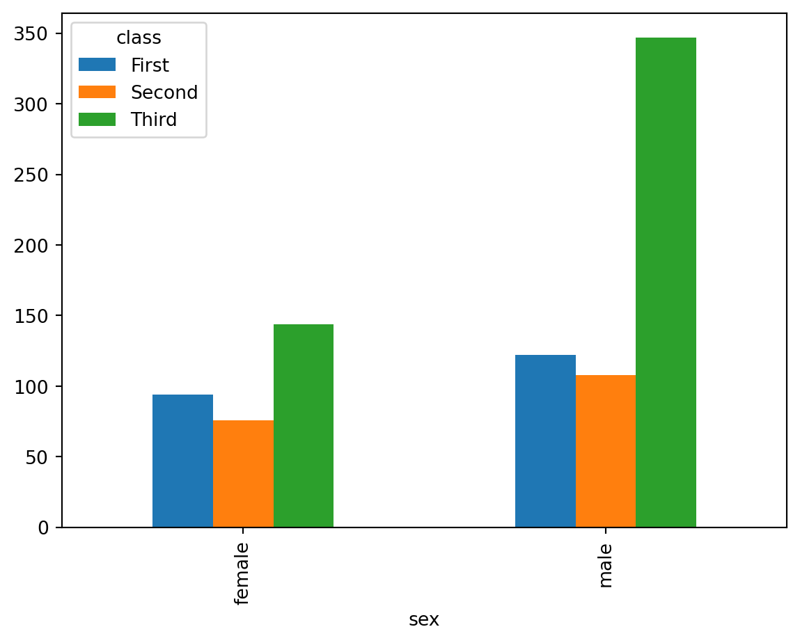
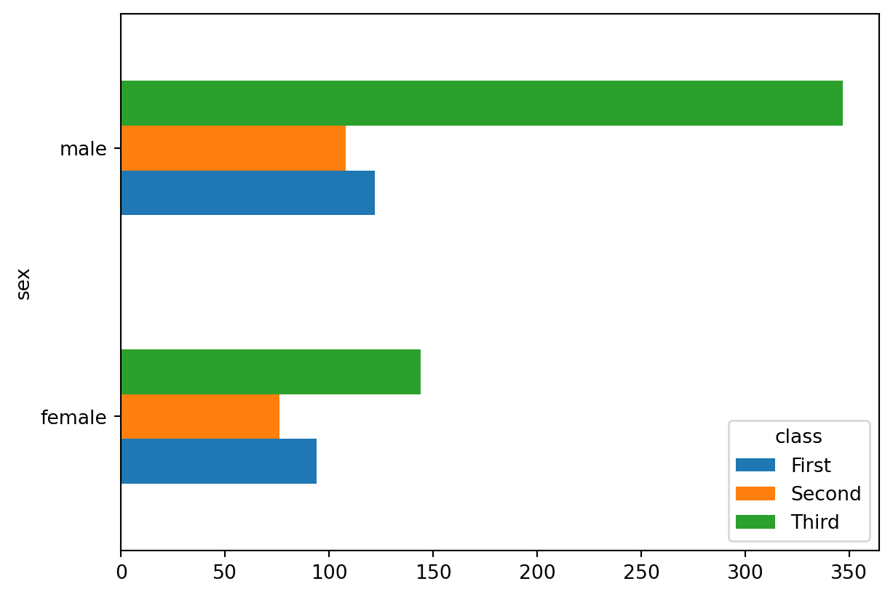
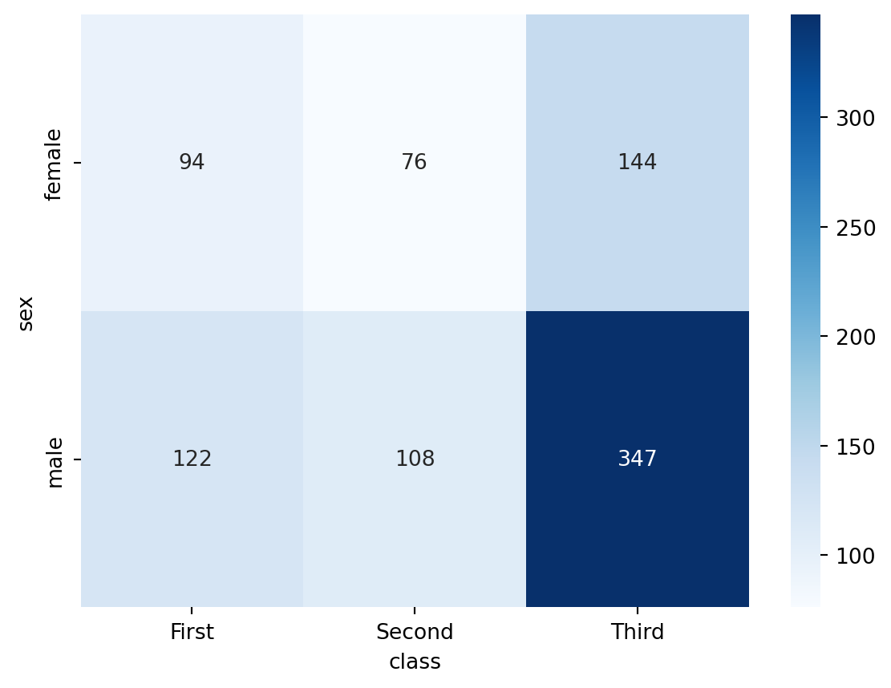
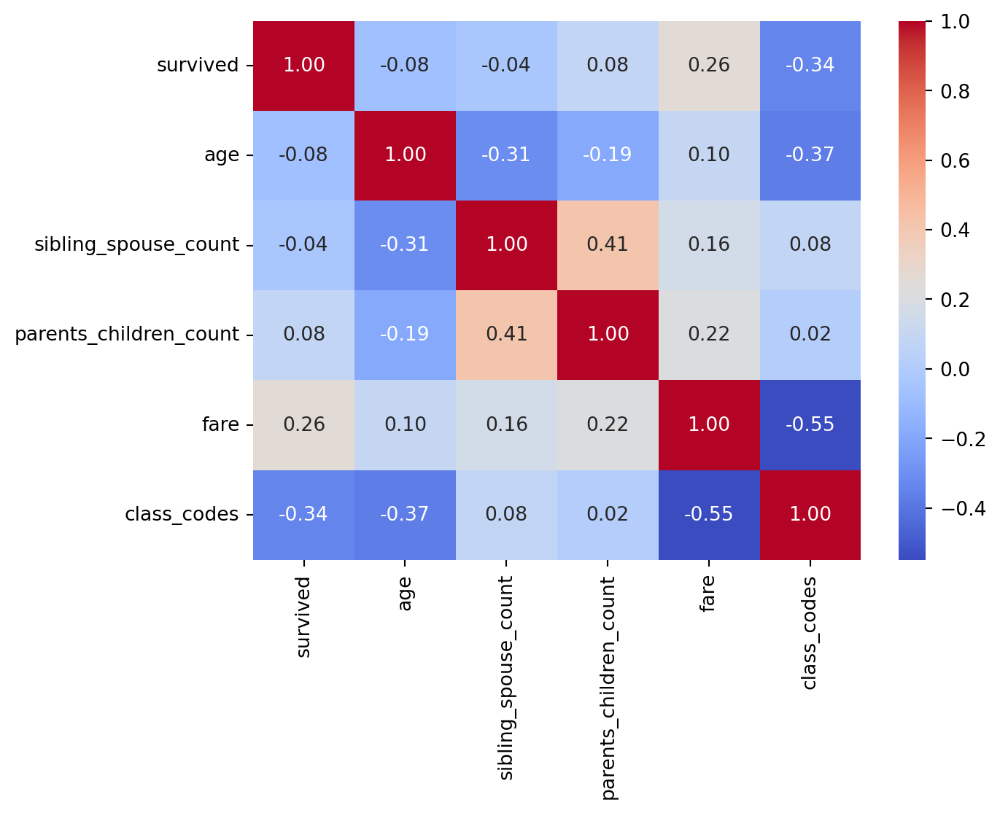
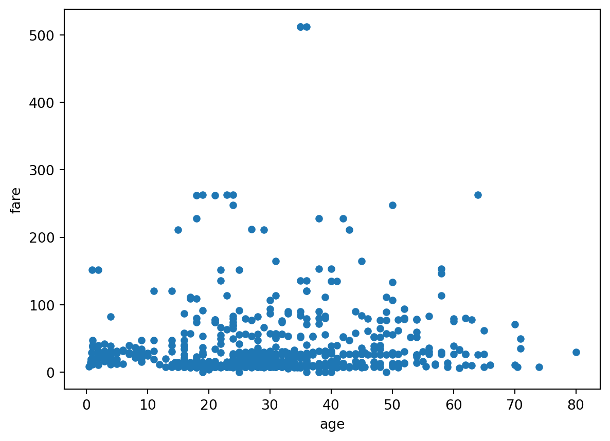
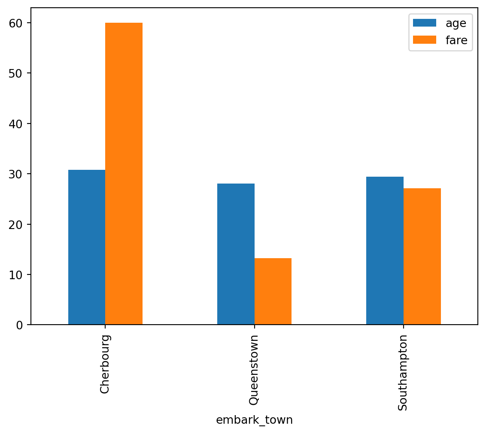
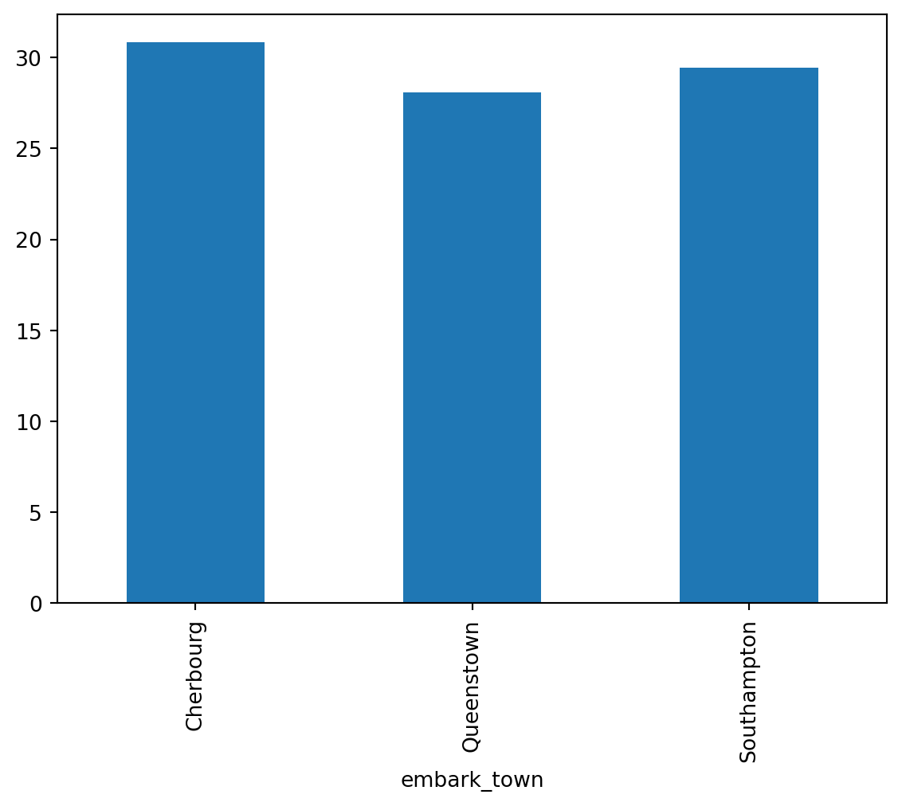

passengers_df.value_counts(["sex", "class"])sex class
male Third 347
female Third 144
male First 122
Second 108
female First 94
Second 76
Name: count, dtype: int64We could pass the entire DataFrame into value_counts and use two categorical variables.
passengers_df.value_counts(["sex", "class"])sex class
male Third 347
female Third 144
male First 122
Second 108
female First 94
Second 76
Name: count, dtype: int64However, this format isn’t that easy to worth with and lacks the additional functionality of .crosstab().
pd.crosstab(index = passengers_df["sex"], columns = passengers_df["class"])| class | First | Second | Third |
|---|---|---|---|
| sex | |||
| female | 94 | 76 | 144 |
| male | 122 | 108 | 347 |
pd.crosstab(index = passengers_df["sex"], columns = passengers_df["class"], margins=True)| class | First | Second | Third | All |
|---|---|---|---|---|
| sex | ||||
| female | 94 | 76 | 144 | 314 |
| male | 122 | 108 | 347 | 577 |
| All | 216 | 184 | 491 | 891 |
All values sum to 100%
pd.crosstab(index = passengers_df["sex"], columns = passengers_df["class"], normalize=True)| class | First | Second | Third |
|---|---|---|---|
| sex | |||
| female | 0.105499 | 0.085297 | 0.161616 |
| male | 0.136925 | 0.121212 | 0.389450 |
Rows sum to 100%
pd.crosstab(index = passengers_df["sex"], columns = passengers_df["class"], normalize="index")| class | First | Second | Third |
|---|---|---|---|
| sex | |||
| female | 0.299363 | 0.242038 | 0.458599 |
| male | 0.211438 | 0.187175 | 0.601386 |
Columns sum to 100%
pd.crosstab(index = passengers_df["sex"], columns = passengers_df["class"], normalize="columns")| class | First | Second | Third |
|---|---|---|---|
| sex | |||
| female | 0.435185 | 0.413043 | 0.293279 |
| male | 0.564815 | 0.586957 | 0.706721 |
pd.crosstab(index = passengers_df["sex"], columns = passengers_df["class"]).plot.bar()
pd.crosstab(index = passengers_df["sex"], columns = passengers_df["class"]).plot.barh()
ct = pd.crosstab(passengers_df["sex"], passengers_df["class"])
sns.heatmap(ct, annot=True, fmt='d', cmap='Blues')
You can pass in more than one variable to either the index argument (e.g., rows) or the columns argument.
pd.crosstab(index = [passengers_df["sex"], passengers_df["class"]],
columns = passengers_df["embark_town"],
margins = True)| embark_town | Cherbourg | Queenstown | Southampton | All | |
|---|---|---|---|---|---|
| sex | class | ||||
| female | First | 43 | 1 | 48 | 92 |
| Second | 7 | 2 | 67 | 76 | |
| Third | 23 | 33 | 88 | 144 | |
| male | First | 42 | 1 | 79 | 122 |
| Second | 10 | 1 | 97 | 108 | |
| Third | 43 | 39 | 265 | 347 | |
| All | 168 | 77 | 644 | 889 |
passengers_df["age"].corr(passengers_df["fare"])np.float64(0.09606669176903891)passengers_df.corr(numeric_only=True)| survived | age | sibling_spouse_count | parents_children_count | fare | |
|---|---|---|---|---|---|
| survived | 1.000000 | -0.077221 | -0.035322 | 0.081629 | 0.257307 |
| age | -0.077221 | 1.000000 | -0.308247 | -0.189119 | 0.096067 |
| sibling_spouse_count | -0.035322 | -0.308247 | 1.000000 | 0.414838 | 0.159651 |
| parents_children_count | 0.081629 | -0.189119 | 0.414838 | 1.000000 | 0.216225 |
| fare | 0.257307 | 0.096067 | 0.159651 | 0.216225 | 1.000000 |
# add class codes that might be relevant
passengers_df["class_codes"] = passengers_df["class"].cat.codes
corr_matrix = passengers_df.corr(numeric_only=True)
sns.heatmap(corr_matrix,
annot=True, # Show correlation values
cmap="coolwarm", # Color scheme (blue-white-red)
fmt=".2f") # Format numbers to 2 decimal places
passengers_df.plot.scatter(x = "age", y = "fare")
What if we wanted to explore the categorical embark_town variable with the numeric age and fare variables?
passengers_df[["embark_town", "age", "fare"]]| embark_town | age | fare | |
|---|---|---|---|
| 0 | Southampton | 22.0 | 7.2500 |
| 1 | Cherbourg | 38.0 | 71.2833 |
| 2 | Southampton | 26.0 | 7.9250 |
| 3 | Southampton | 35.0 | 53.1000 |
| 4 | Southampton | 35.0 | 8.0500 |
| ... | ... | ... | ... |
| 886 | Southampton | 27.0 | 13.0000 |
| 887 | Southampton | 19.0 | 30.0000 |
| 888 | Southampton | NaN | 23.4500 |
| 889 | Cherbourg | 26.0 | 30.0000 |
| 890 | Queenstown | 32.0 | 7.7500 |
891 rows × 3 columns
passengers_df.groupby("embark_town")[["age", "fare"]].mean()| age | fare | |
|---|---|---|
| embark_town | ||
| Cherbourg | 30.814769 | 59.954144 |
| Queenstown | 28.089286 | 13.276030 |
| Southampton | 29.445397 | 27.079812 |
passengers_df.groupby("embark_town")[["age", "fare"]].agg(["mean", "max"])| age | fare | |||
|---|---|---|---|---|
| mean | max | mean | max | |
| embark_town | ||||
| Cherbourg | 30.814769 | 71.0 | 59.954144 | 512.3292 |
| Queenstown | 28.089286 | 70.5 | 13.276030 | 90.0000 |
| Southampton | 29.445397 | 80.0 | 27.079812 | 263.0000 |
passengers_df.groupby("embark_town").agg({
"passenger_id": "count",
"fare": "sum",
"age": ["min", "median", "max"]
})| passenger_id | fare | age | |||
|---|---|---|---|---|---|
| count | sum | min | median | max | |
| embark_town | |||||
| Cherbourg | 168 | 10072.2962 | 0.42 | 29.0 | 71.0 |
| Queenstown | 77 | 1022.2543 | 2.00 | 27.0 | 70.5 |
| Southampton | 644 | 17439.3988 | 0.67 | 28.0 | 80.0 |
You can also visualize the result from a groupby() workflow. For instance,
results = passengers_df.groupby("embark_town")[["age", "fare"]].mean()
results| age | fare | |
|---|---|---|
| embark_town | ||
| Cherbourg | 30.814769 | 59.954144 |
| Queenstown | 28.089286 | 13.276030 |
| Southampton | 29.445397 | 27.079812 |
results.plot.bar()
results["age"].plot.bar()